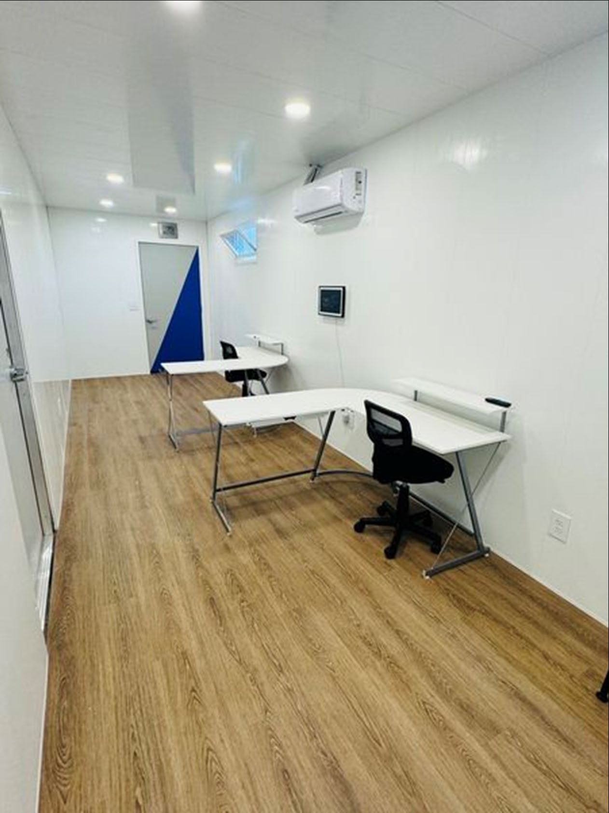
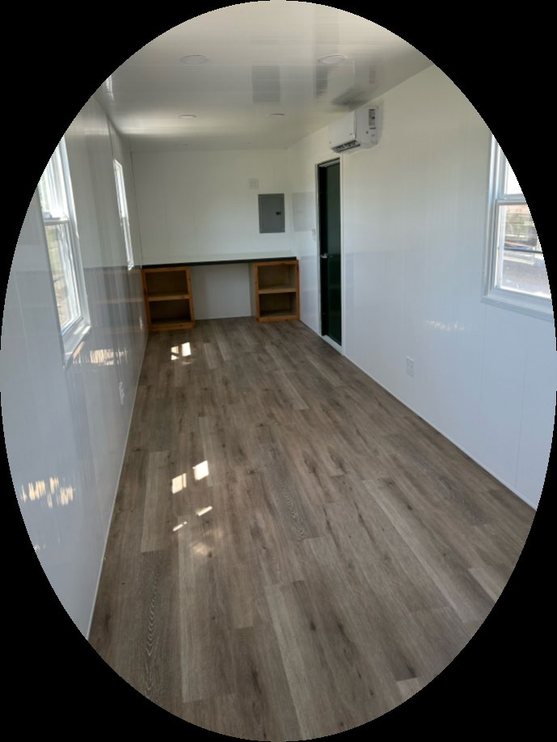
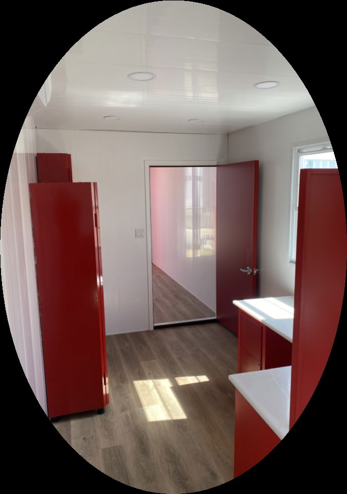
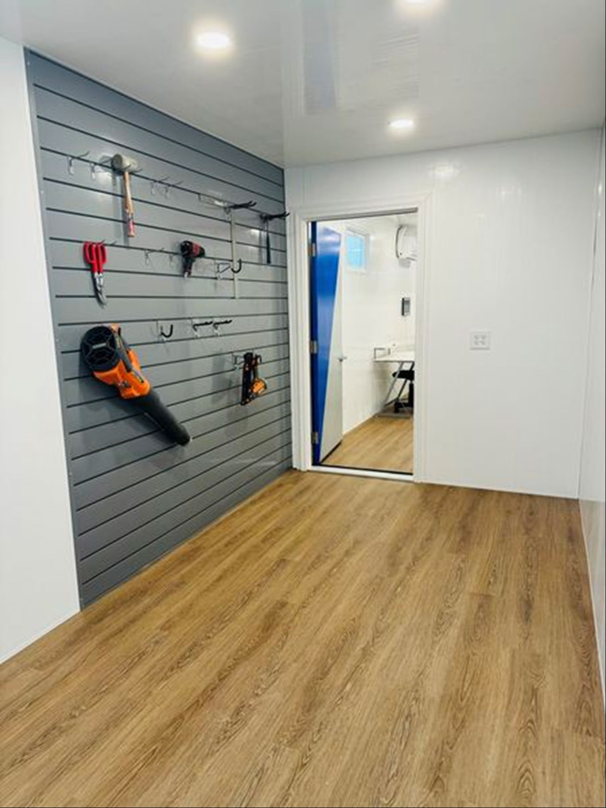

Fully customizable container offices for job-site or commercial applications, designed around durability, security and practical workspace.

Additional security features include WAR-LOK heavy-duty puck locks, rebar windows, motion lighting and cameras, plus built-in storage for tools and equipment.
WAR-LOK puck-lock options for stronger site security.
Motion lighting and camera options for additional protection.
Built-in storage helps keep field tools and equipment organized.




Tell us how your team will use it and what security and storage you need.